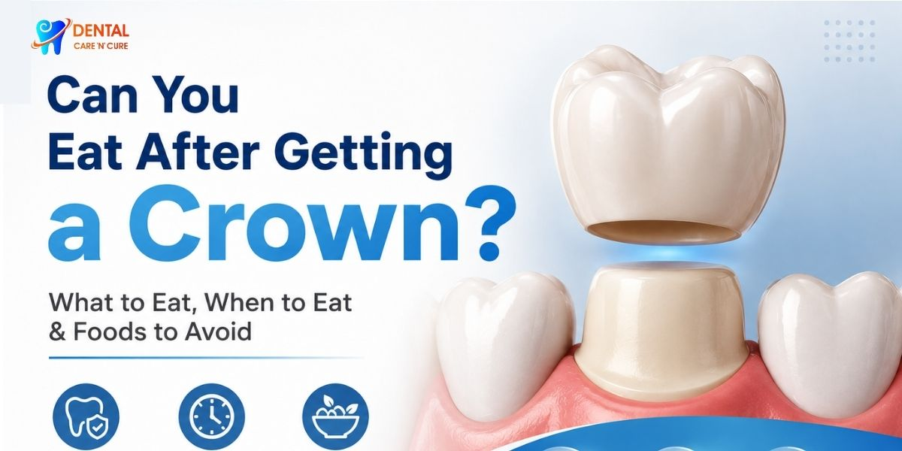

Our Location
Our Location
1st Floor, D2, Shubham Enclave, Paschim Vihar, New Delhi - 110063
 +91- 9310999214
+91- 9310999214
Call for free consultation
Can You Eat After Getting a Crown? What to Eat, When to Eat & Foods to Avoid
Getting a dental crown can make a damaged tooth feel protected again, but one question often comes immediately after the appointment: can you eat after getting a crown? The short answer is yes, but you may need to be a little careful at first. Your dentist may recommend temporary changes depending on whether you received a temporary crown or permanent crown, whether your mouth is still numb, and how the crown fits. If you are considering broader restorative care, Full Mouth Rehabilitation in Delhi may also involve crowns as part of a comprehensive treatment plan. At Dental Care 'N' Cure, clear crown aftercare advice is an important part of helping patients protect their restored teeth.

Can You Eat After Getting a Crown?
Understanding what happens immediately after crown placement makes the eating advice much easier to follow. A crown covers a prepared natural tooth and restores its shape and function. During a typical dental crown procedure, your dentist prepares the tooth, checks the crown's fit, and secures it with dental cement or another bonding material. A temporary crown may be placed while a laboratory makes the permanent restoration.
So, can you eat after a crown is put in? Usually, yes. However, do not rush to chew while your mouth remains numb. Local anaesthetic can temporarily reduce sensation, making it easier to bite your cheek, tongue, or lip without noticing.
If your dentist gives you specific instructions about when you can eat after a dental crown, follow those instructions first. Your treatment may have individual considerations that general online advice cannot cover.
Can You Eat Immediately After Getting a Crown?
There is no single eating time that applies to every crown patient. The safest approach is to wait until the numbness has worn off before eating normally. This helps you avoid accidentally biting soft tissues.
If you received a temporary crown, your dentist may also recommend being especially careful with chewing because temporary restorations use temporary cement and are designed for short-term use. NHS guidance explains that a temporary crown may be used while the laboratory prepares the final crown.
In other words, your crown does not need to become your excuse for skipping lunch, but it does deserve a little respect on day one.
What to Eat After Getting a Crown
Knowing what to eat after getting a crown can make the first few meals much more comfortable. You do not necessarily need a special diet, but softer foods can reduce pressure on a recently treated tooth, particularly if chewing feels uncomfortable.
Good options can include:
- Yogurt
- Scrambled eggs
- Soft cooked vegetables
- Oatmeal
- Pasta
- Soft rice dishes
- Mashed potatoes
- Soft fruits
- Soups that are comfortably warm rather than very hot
- Tender foods that require minimal chewing
These soft foods after a dental crown can be useful if the tooth or surrounding gum feels tender. You can also chew on the opposite side temporarily if your treated tooth feels sensitive.
For patients concerned about eating after permanent crown placement, the key point is that a properly fitted permanent crown is designed to restore normal tooth function. However, you should still avoid immediately testing it with the hardest food in your kitchen.
Eating After a Temporary Crown
Eating after a temporary crown requires more care than eating with a well-established permanent restoration. Temporary crowns are designed to protect the prepared tooth until the definitive crown is fitted. Leeds Teaching Hospitals NHS Trust notes that temporary crowns are cemented with temporary cement and later replaced with the permanent crown.
During the temporary stage:
- Choose softer foods when possible.
- Avoid chewing very hard foods directly on the temporary crown.
- Be careful with sticky foods that could pull on the restoration.
- Follow the specific instructions provided by your dentist.
- Contact your dental clinic if the temporary crown becomes loose or comes out.
If a temporary restoration becomes loose, do not assume it will simply "find its way back home." A dental professional should assess it and advise you on the next step.
Eating After a Permanent Crown
Eating after permanent crown placement is generally more straightforward. A permanent crown is designed to function as a dental restoration over the prepared tooth, and most people can return to their normal routine after placement. Cleveland Clinic notes that people can generally resume normal activities after crown placement, although temporary sensitivity can occur.
That does not mean a permanent crown is indestructible. Think of it as a restored tooth, not a replacement for a nutcracker.
Foods to avoid after getting a crown
Some foods can place unnecessary stress on a crown. Cleveland Clinic specifically recommends avoiding extremely hard foods such as ice cubes and very hard nuts, along with popcorn kernels and very sticky foods such as taffy and caramels.
Therefore, foods to avoid after getting a crown can include:
- Ice cubes
- Very hard nuts
- Popcorn kernels
- Sticky sweets and caramel
- Very hard or crunchy foods that require excessive biting force
The same principle applies to hard foods after crown placement and sticky foods after crown placement: if a food requires considerable force to bite, it may be better to avoid it, particularly while you are adjusting to the restoration.
Also Read: 4 Types of Teeth: Structure, Function, and Why They Matter
What About Hot and Cold Foods After a Crown?
Hot and cold foods after a crown can sometimes trigger temporary sensitivity. Cleveland Clinic reports that sensitivity, particularly to heat and cold, can occur for a few weeks after crown placement.
This does not automatically mean something has gone wrong. However, pay attention to the pattern.
If cold water, hot tea, or certain foods cause mild, short-lived sensitivity, give the tooth some time and follow your dentist's advice. If you experience persistent or worsening pain, contact your dental professional.
Crown Sensitivity After Placement: What Is Normal?
Some crown sensitivity after placement can occur because the tooth has undergone dental treatment. The surrounding gum may also feel tender for a short period. Cleveland Clinic notes that sensitivity can occur for a couple of weeks and that gum soreness or tenderness should generally settle within a few days.
However, severe or persistent symptoms deserve professional attention. A crown that feels unusually high when you bite may need a bite adjustment. A loose crown, crack, sharp edge, bad taste, or significant ongoing discomfort also warrants a call to your dentist.
A General Dentist can assess many crown-related concerns, while a Prosthodontist may be involved when a patient needs complex restorative planning.
Crown Aftercare: How to Protect Your Restored Tooth
Good crown aftercare does not end when you leave the dental appointment. Your crown sits alongside your natural teeth and gums, so regular oral hygiene remains important.
Dental crown aftercare tips — continue to:
- Brush your teeth regularly with fluoride toothpaste.
- Clean between your teeth every day.
- Follow your dentist's instructions about flossing around the restoration.
- Attend regular dental appointments.
- Avoid using your teeth to open packages or bite non-food objects.
- Protect your crown if your dentist recommends a solution for grinding or clenching.
Cleveland Clinic recommends brushing at least twice daily with fluoride toothpaste, daily flossing, and regular dental examinations and cleanings to help maintain crowns.
Good oral hygiene matters because a crown protects the visible tooth structure, but it does not make the surrounding gums or remaining natural tooth immune to dental problems.
When Should You Contact Your Dentist?
Most people adjust to a new crown without major problems, but some symptoms should not be ignored.
Contact your dental clinic if:
- Your crown feels loose.
- The crown comes out.
- Your bite feels uneven.
- You develop significant or worsening pain.
- The crown cracks or chips.
- A sharp edge irritates your tongue or gums.
- You notice a persistent bad taste or bad breath around the restoration.
The American Association of Endodontists also advises patients to contact their dental professional when a bite feels uneven or when a temporary crown or filling comes out after treatment.
Also Read: How to Prepare for the First Dental Appointment in Delhi – Here's What to Expect
Can You Eat After Getting a Crown? The Bottom Line
You want to know if you can eat after getting a crown. The answer is yes. You should give your mouth some time to feel better after the appointment. You should also wait until the numbness from the anaesthetic is gone before you start chewing like you normally do.
If you have a crown, you need to be careful when you eat hard or sticky foods. If you have a permanent crown, you can usually go back to eating as you did before, as long as you take good care of your crown.
The best way to take care of your crown is really simple. You should do what your dentist tells you to do. Start with foods that're easy to eat. Do not chew hard. Take care of your teeth and mouth. If something does not feel right, you should talk to your dentist. A crown is supposed to make it easy for you to eat and smile, not make you worry about your tooth.
If you have questions about your crown, or if your tooth is still sensitive, hurts when you chew, or your crown does not feel like it fits right, you should talk to Dental Care 'N' Cure. The dentists at Dental Care 'N' Cure can look at your crown, tell you what to do next, and help you figure out what is best for your tooth.
If you want to get your crown checked, contact Dental Care 'N' Cure and make an appointment with a dentist today. Dental Care 'N' Cure can help you with your crown concerns.